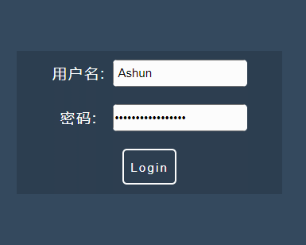
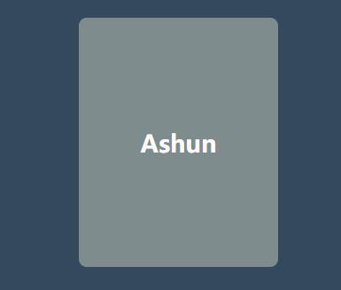
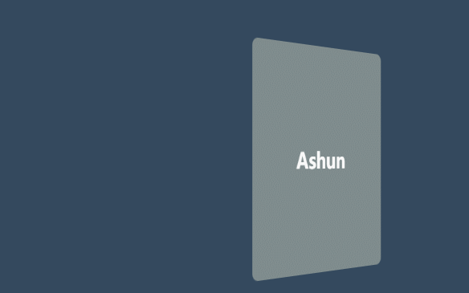
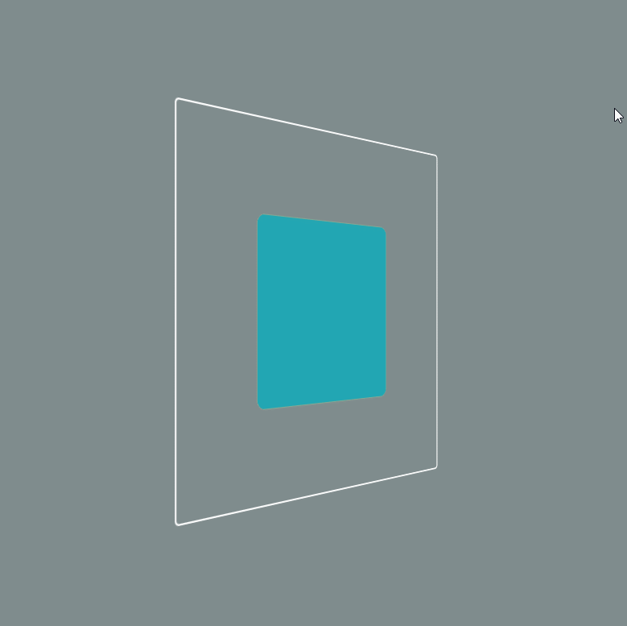

基操
如果说CSS3的灵魂在于美妙的动画，那在实现炫酷动画过程中，就一定少不了transform变形，在transform中我们可以设置移动、旋转、缩放等效果，同时transform也为我们提供了一些族属性，来应对不同的场景，只要你敢想就能设计出不同的动效。
transform的属性如下：
translate：
| translate相关 |
含义 |
| translate(x,y) |
可同时设置沿(x,y)轴的移动长度 |
| translateX(x) |
只设置x轴移动长度 |
| translateY(y) |
只设置y轴移动长度 |
| translateZ(z) |
只设置z轴移动长度，只有在3D场景下，该属性才能体现 |
| translate3d(x,y,z) |
可分别设置沿(x,y,z)轴的移动长度 |
rotate
| rotate相关 |
含义 |
rotate(ndeg) |
与rotateZ相同。 |
rotateX(ndeg) |
只设置x轴旋转角度，在3d场景尤为明显 |
rotateY(ndeg) |
只设置y轴旋转角度，在3d场景尤为明显 |
rotateZ(ndeg) |
只设置z轴旋转角度 |
rotate3d(x,y,z，ndeg) |
可分别设置沿(x,y,z)轴的旋转角度，前三个参数值为0或1,意为是否设置某个轴的旋转。 |
scale
| scale相关 |
含义 |
| scale(x,y) |
分别定义(x,y)轴的缩放比例，值为0~n，若只传入一个值，则(x,y)轴都应用这个值。 |
| scaleX(x) |
只设置x轴缩放。 |
| scaleY(y) |
只设置y轴缩放。 |
| scaleZ(z) |
只设置z轴缩放 |
| scale3d(x,y,z) |
可分别设置沿(x,y,z)轴的缩放倍数。 |
skew
| scale相关 |
含义 |
| skew(x,y) |
分别定义(x,y)轴的倾斜角度，单位deg,若只传入一个值，则(x,y)轴都应用这个值。 |
| skewX(x) |
只设置x轴倾斜角度。 |
| skewY(y) |
只设置y轴倾斜角度。 |
perspective
transform: perspective(arg),参数单位为px，规定3D场景的视角距离，该属性可设置在3D盒子本身，也可设置在父级元素，都能成功显示视口距离效果。
还有一个全局属性perspective: arg,用法与transform: perspective(arg)相同，不过值得注意的是：这个全局属性必须设置在想要展示3D效果盒子的父级元素上，才能正常显示视角距离效果。
族属性
| 属性 |
含义 |
| transform-origin |
设置transform变换的基点 |
| transform-style |
规定被嵌套元素如何在 3D 空间中显示。 |
其它相关
| 属性 |
含义 |
| perspective |
设置3D场景的视角距离 |
| perspective-origin |
设置3D场景的视角基点 |
| backface-visibility |
设置元素背面是否可见，可设置visible、hidden。 |
示例
了解了变形的基本操作，就可以利用这些属性随意发挥想象力了，下面示例将会运用transform实现。
一、表单效果

值得注意的是：input[type="text"]不能添加伪类。
1
2
3
4
5
6
7
8
9
10
11
12
13
14
15
16
17
18
19
20
21
22
23
24
25
26
27
28
29
30
31
32
33
34
35
36
37
38
39
40
41
42
43
44
45
46
47
48
49
50
51
52
53
54
55
56
57
58
59
60
61
62
63
64
65
66
67
68
69
70
71
72
73
74
75
76
77
78
79
80
81
82
83
84
85
86
87
88
89
90
91
92
93
94
95
96
97
98
99
100
101
102
103
104
105
106
107
108
109
110
111
112
113
114
115
116
117
118
119
120
121
122
123
124
125
126
127
128
129
130
| <style>
main {
width: 80%;
}
form {
width: inherit;
display: flex;
flex-direction: column;
justify-content: space-around;
align-items: center;
background: #2c3e50;
}
span {
width: 60px;
display: inline-flex;
justify-content: space-around;
align-items: center;
letter-spacing: 2px;
color: white;
}
label {
display: block;
min-height: 50px;
display: flex;
justify-content: center;
align-items: center;
}
.inputBox {
display: inline-block;
position: relative;
width: 150px;
min-height: 30px;
border-radius: 5px;
margin-left: 8px;
background: white;
overflow: hidden;
transition: 0.8s;
}
input {
display: inline-block;
min-height: 30px;
}
.after {
position: absolute;
bottom: 0px;
left: 0px;
width: 100%;
height: 2.1px;
border-radius: 2px;
background: linear-gradient(
to right,
white,
#e74c3c,
#e67e22,
#f1c40f,
#bdc3c7,
#1abc9c,
#3498db,
#9b59b6,
white
);
transform: translateX(-100%);
transition: 0.8s;
}
.inputBox:hover {
transform: scale(1.1);
}
.inputBox:hover .after {
transform: translateX(0);
}
button {
width: 60px;
height: 40px;
margin: 10px;
color: white;
background: transparent;
border: 2px solid white;
border-radius: 5px;
position: relative;
overflow: hidden;
transition: 0.8s;
}
button > span {
position: absolute;
top: 50%;
left: 50%;
z-index: 1;
background: transparent;
transform: translate(-50%, -50%);
}
button::after {
content: "";
width: 98%;
height: inherit;
position: absolute;
top: 50%;
left: 50%;
background: transparent;
transform: translate(-50%, -50%);
transition: 0.8s;
}
button:hover {
transform: scale(1.1);
}
button:hover:after {
transform: skewX(45deg) translate(-10px, -50%);
background: #e74c3c;
}
</style>
<body>
<main>
<form action="#">
<label>
<span>用户名:</span>
<div class="inputBox">
<input type="text" />
<div class="after"></div>
</div>
</label>
<label>
<span>密码:</span>
<div class="inputBox">
<input type="text" />
<div class="after"></div>
</div>
</label>
<button><span>Login</span></button>
</form>
</main>
</body>
|
3D
对于3D效果，我们就需要进行一些预设，只有配置了这些预设，才能够有视觉效果。
transform-style: 规定被嵌套元素如何在 3D 空间中显示。
| 属性值 |
含义 |
| flat |
子元素将不保留其 3D 位置。 |
| preserve-3d |
子元素将保留其 3D 位置。 |
当我们设置transform-style: preserve-3d时，后期改变元素位置，才会有视口距离效果。
当然，我们还要配置视口距离👇。
perspective
我们可以使用两种方式定义视口距离，单位都为px：
perspective: argtransform: perspective(arg)
但值得注意的是二者的区别，上文已经说明，这里不再赘述，但在实际使用时，用哪个比较好呢？
个人推荐使用perspective,不使用transform: perspective(arg)的原因如下:
当触发选项很多时，为了保证具有视口效果，在触发时的样式表中还要重复配置transform: perspective(arg)。
因为动画被触发时，应用的是触发时的样式表，若此时不配置transform: perspective(arg),则会出现：动画触发前还有视口效果，触发后却没有了。
而我们为了避免这种情况，只需要在其父级盒子上设置perspective即可，因为其不属于transform, 所以在后期触发时，不用考虑transform重新配置的问题。
当我们做好了前期的预设，后面就可以顺利展示3d效果了：
（z）轴相关特效得以体现
一些（x,y）轴的特效会更加明显
让我们来对比一下：
一、未配置预设时的translateZ效果
没错！没有效果，由于没有保留元素3d位置，所以Z轴效果不能够得到体现。

二、配置预设后
什么？效果不明显？让我们简单的旋转一下。

案例展示
下面让我们展示一个案例，更好的熟悉3D动画

1
2
3
4
5
6
7
8
9
10
11
12
13
14
15
16
17
18
19
20
21
22
23
24
25
26
27
28
29
30
31
32
33
34
35
36
37
38
39
40
41
42
43
44
45
46
47
48
49
50
51
52
53
54
55
56
57
58
59
60
61
62
63
64
65
66
67
68
69
70
71
72
73
74
75
76
77
78
79
80
81
82
83
84
85
| <style>
* {
margin: 0px;
padding: 0px;
box-sizing: border-box;
}
body {
width: 100vw;
min-height: 100vh;
background-color: #7f8c8d;
}
main {
width: inherit;
height: 100vh;
display: flex;
flex-direction: column;
justify-content: space-around;
align-items: center;
}
section {
width: 400px;
height: 400px;
}
.box3D {
width: inherit;
height: inherit;
border: 2px solid white;
border-radius: 5px;
transform-style: preserve-3d;
transform: perspective(900px) rotate3d(0, 1, 0, 45deg);
transition-duration: 1s;
transition-delay: 1s;
position: relative;
}
.box3D > div {
width: 200px;
height: 200px;
position: absolute;
top: 50%;
left: 50%;
transform: translate(-50%, -50%);
border-radius: 10px;
transition: 1s;
}
.box3D > div:nth-of-type(1) {
background: #badc58;
}
.box3D > div:nth-of-type(2) {
background: #ff7979;
}
.box3D > div:nth-of-type(3) {
background: #ffbe76;
}
.box3D > div:nth-of-type(4) {
background: #22a6b3;
}
.box3D:hover {
transform: perspective(900px) rotate3d(0, 1, 1, 225deg);
}
.box3D:hover > div:nth-of-type(1) {
transform: translate3d(-50%, -50%, 100px);
}
.box3D:hover > div:nth-of-type(2) {
transform: translate3d(-50%, -50%, -200px);
}
.box3D:hover > div:nth-of-type(3) {
transform: translate3d(-50%, -50%, -100px);
}
.box3D:hover > div:nth-of-type(4) {
transform: translate3d(-50%, -50%, 200px);
}
</style>
<body>
<main>
<section>
<div class="box3D">
<div></div>
<div></div>
<div></div>
<div></div>
</div>
</section>
</main>
</body>
|
进行以下更改即可
1
2
3
4
5
6
7
8
9
10
| section {
width: 400px;
height: 400px;
perspective: 900px; //在父级元素配置视口
}
.box3D {
……
transform: rotate3d(0, 1, 0, 45deg); //去掉transform:perspective(900px)
……
}
|
之后再出发时，就不用重复配置transform: perspective(900px)选项了。
1
2
3
| .box3D:hover {
transform: rotate3d(0, 1, 1, 225deg);
}
|
效果和之前一样，还能减少代码冗余。
最后
原创文章，文笔有限，才疏学浅，文中若有不正之处，速速告知。
本文到此结束，希望对你有所帮助，我是 Ashun ，在校大学生，立志成为资深前端工程师，欢迎大家一起交流、学习。后续更新更多文章，请持续关注哦~